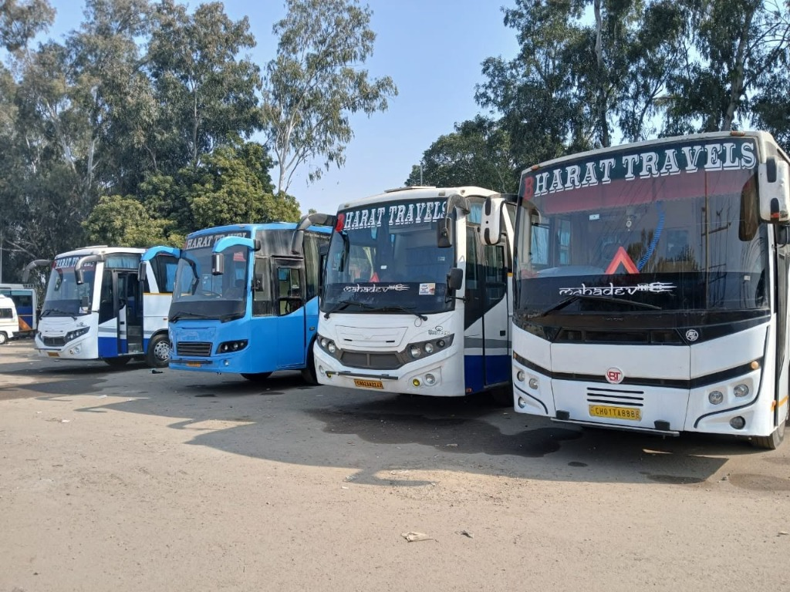
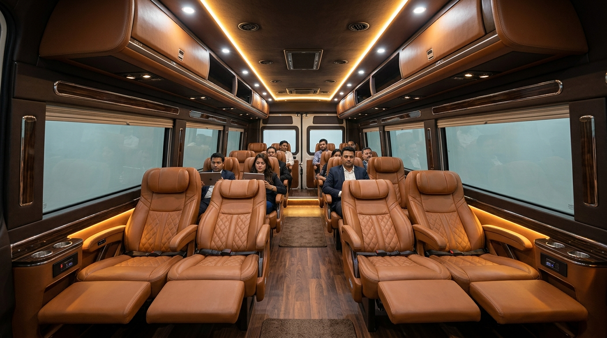

Zirakpur to Jaisalmer Bus Hire by Bharat Bus Service In Zirakpur (Est. 2002) provides top-rated luxury 27 to 60 seater AC bus hire and Tempo Traveller rental for family trips, corporate retreats, pilgrimage yatras, and tourist group transfers from Zirakpur, Chandigarh, Mohali, and Panchkula to Jaisalmer (Golden Fort & Desert Sam Dunes). Distance: 820 KM, Estimated Travel Time: 13.5 Hours, Starting Tariff: ₹45/KM. Learn more on Jaisalmer.
Zirakpur to Jaisalmer Bus Hire by Bharat Bus Service In Zirakpur offers specialized commercial transport solutions for travelers visiting Jaisalmer (Golden Fort & Desert Sam Dunes) in Rajasthan. Our fleet features All India Tourist Permits (AITP), heavy-duty climate control AC, pushback reclining seats, air suspension, and experienced outstation highway captains.

| Route Parameter | Details & Value |
|---|---|
| Destination City | Jaisalmer (Golden Fort & Desert Sam Dunes) |
| Highway Distance | 820 KM |
| Est. Driving Duration | 13.5 Hours |
| Starting Per-KM Tariff | ₹45/KM |
| Parent State Route | Rajasthan Outstation Routes |
With over 22+ years of operating excellence, Bharat Bus Service provides 100% transparent pricing without surprise fees. All commercial vehicles undergo rigorous pre-trip inspection, sanitization, and GPS tracking to guarantee safety for families, women travelers, senior citizens, and corporate delegates.

Bus hire for Jaisalmer (Golden Fort & Desert Sam Dunes) starts at ₹45/KM with minimum 250 KM/day billing. Total cost depends on seating capacity (27 to 60 Seater).
Driving distance is approximately 820 KM, taking about 13.5 Hours via high-speed national expressways.
Get instant WhatsApp fare estimate & vehicle availability for Jaisalmer (Golden Fort & Desert Sam Dunes).
📞 Call +91 9814276846